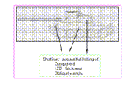
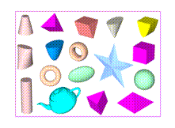
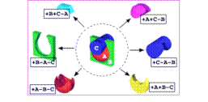
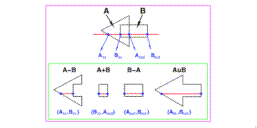

The vulnerability of a system is a measure of that system's susceptibility to damage when attacked by a particular threat mechanism. Lethality, on the other hand, considers the reciprocal, and estimates the damage a threat inflicts on a particular target. The earliest attempts at V/L assessments were concerned with tanks being attacked by direct fire weapons, and relied heavily on subjective judgement. The major concern was perforation of the armor; hence, the only geometric information needed was armor thickness and obliquity angle. The penetration capability of the attacking munition was matched against the armor. If perforation occurred, then estimates were made concerning damage and residual system combat capability. Methodology soon began to emerge, however, and by the late 1950s, computer codes existed to estimate damage sustained by armored vehicles attacked by direct fire munitions. These early V/L analysis computer codes considered large numbers of shot locations on a target from several attack aspects. For each attack azimuth, shot locations were evaluated for a grid completely covering the target. The geometric information required was a formatted file containing a sequential listing of information about each component encountered for each grid cell (or shot location). The required information included the name of the component, line-of-sight thickness, entrance and exit obliquity angles, and the type of material. This information, known as shotline data, was manually derived. For each attack direction, a 4-inch grid was physically drawn over the appropriate engineering drawing. Then, on a cell-by-cell basis, the shotline data were estimated
Figure 1. Manual Shotlines From Engineering Drawings.
and written in the correct format to be evaluated by the V/L analysis computer code.
This shotline generation procedure was unsatisfactory. The manual nature and subjectiveness made the whole process error-prone and time-consuming. In addition, only those attack views for which engineering drawings existed could be evaluated. The attempt to rectify these shortcomings led directly to the birth of 3-dimensional solid geometric modeling in the Army. The process certainly had to be computerized; hence, the solution to the shotline generation problem was twofold. First, a technique of representing the geometry of the target in the computer was required. Second, an algorithm which would allow the computer to interrogate the geometric representation stored in its memory and calculate the shotline data would complete the solution. In 1967, a contract with the Mathematical Applications Group, Inc. MAGI[1] provided the solution. MAGI introduced the Combinatorial Solid Geometry (CSG) technique for representing geometry in a computer and the ray-tracing geometry interrogation scheme.
The CSG approach, still in use today, uses Boolean combinations of simple solid geometric shapes, or primitives, to model components at any level of detail. Figure 2. is a rendering of the current set of primitives while figure 3. shows the results of several Boolean operations. The first geometric modeling system using the CSG technique required three separate files. The first file contained the parameters of the individual primitives, defining the shape, size, location, and orientation of each. The second file defined the regions, which are the Boolean constructs combining the primitives from the first file. The third file identified the regions by labeling which component of the target each region represented. These CSG files constituted what has become known as a target description. The target description was required input to the ray-tracing code to produce the shotline information.
Figure 2. Sample CSG Primitives
Figure 3. Examples of Boolean Operations
The ray-tracing technique, as its name implies, mathematically intersects rays, or lines, with the CSG target description. Parallel rays are initiated from a "grid plane" oriented at the desired attack direction. These rays are intersected with the regions of the description. As the ray encounters a region, at the intersections with each of the defining primitives of that region, the 3-dimensional coordinate locations and surface normals are calculated. The primitive-ray intersections are then combined according to the Boolean formula for that region
Figure 4. Ray-Tracing a Simple Region
to produce the actual intersections for that region. These intersection coordinates are used to calculate thicknesses, which, along with surface normals and other information further identifying the region, constitute the shotline information.
The ray-tracing code eliminated the shortcomings of the hand-generated shotline process and greatly increased the overall V/L capability. Parallel shotline information could now be quickly generated from any attack direction, including nonzero elevations. Furthermore, divergent rays could be used to simulate the bursting phenomenon. Ray- tracing continues, to this day, to be a flexible geometry interrogation tool and has been used to simulate many
The development of the ray-tracing technique immediately turned the spotlight directly on the target description. In addition, new capabilities and more detailed analyses placed increased emphasis on the target descriptions. Soon the construction and validation of target descriptions became the most crucial and time-consuming element in the V/L process. The demand for highly detailed, accurate, and timely target descriptions quickly outdistanced the capability to produce them. The main reason was that the construction procedure itself remained a manual process, mired in a mainframe/batch computing environment. With the promise demonstrated by the emerging interactive computer graphics field and the move towards the open environment of the UNIX operating system, a long-term project was initiated in late 1970s to address this problem. The goal of this project was to create an interactive CSG geometric modeling system within the framework of a more flexible, portable computing environment.
In 1983, the first interactive CSG modeling system[2] was introduced. This system greatly reduced the time required to construct and validate CSG target descriptions. The computer hardware necessary to support this interactive modeling system was rather limited, and included a mini- computer driving a single display device. Soon, however, the graphics work-station entered the market, providing a tremendous boost to the target description preparation process. The work-station provided target describers with a powerful, dedicated computing platform, including excellent interactive graphics capability, all at a relatively low cost.
About the same time, the algorithms of the early ray-tracing codes were rewritten in the C programming language and put in a library. This library made the development of new ray-tracing-based applications codes much easier. The interactive modeling system and a large volume of associated software have been bundled into what is known as the BRL-CAD Muuss[3] package. This software has been distributed world-wide since 1987 and is continually being expanded and improved.